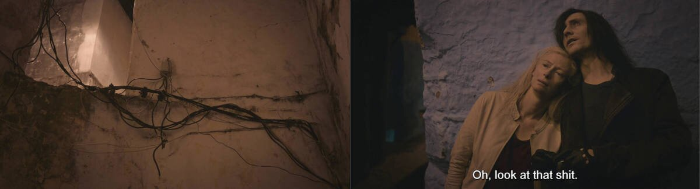
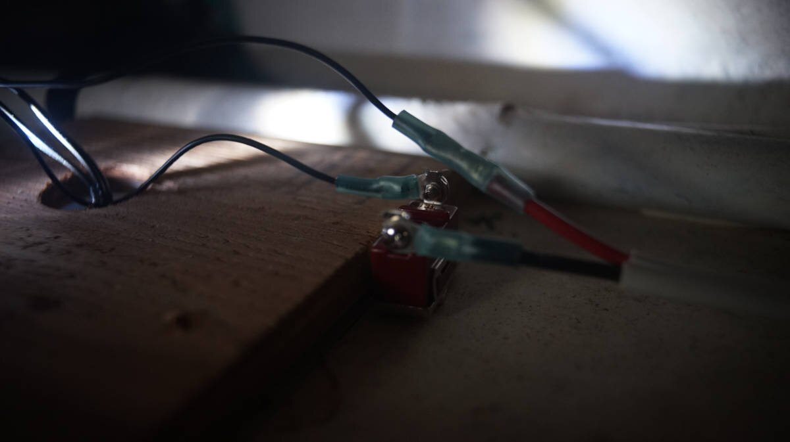
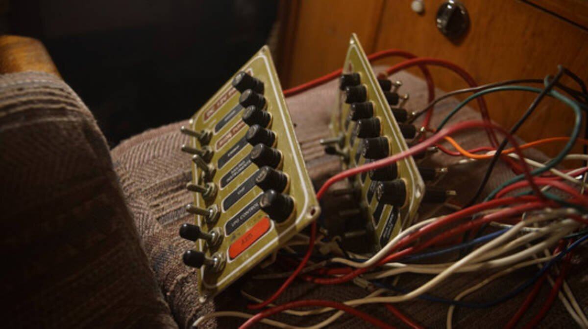

electrical refit
22.11.29
Victoria, BC. Canada.
This page is a work in progress... as we are doing this project right now.

Pino looks well-ordered when standing inside the cabin, but a peek behind the wall and ceiling panels reveals a nightmarish scene. The boat has fewer systems than it used to, but a lot of the old wiring is still there, tangled and trapped with other important wires. Because of this tangled mess it is difficult to see what is what. In the fall of 2022, we decided that it was time to tackle this dreaded, but necessary project.
Being connected to shore power was important for this electrical re-fit, we have to remove all the wiring on the DC side while still being able to cook and to keep Pino lit. With shower power, we can cook using our induction cooktop, and we use two bright 120V clamp lights to light up work areas.
The first step is to disconnect everything on the DC side from the breaker panels. We were careful to identify each one, adding labels. Now with all the wires free, came time to pull and tug at the dead wires. If all wires to the panels were free, dead wires should come up freely, right? No. We found that many of the wires on Pino were bound together by electrical tape, and some of those 'braids' are so thick that extracting a single wire is impossible. The worst braids run through parts of the boat we have no access to, through tubes glassed into the boat, and no matter how much we pull (either direction) they will not budge.

The only option available to us then is to use force. We removed what little of the electrical tape we could reach, and then grabbed a wire in the center of the braid and pulled. We only did this for wires we planned to replace (because pulling could damage them), or for dead wires. Every braid had a dead wire in it that we could pull at. Eventually, after a lot of force the wire would start to slide, until it was free. Everytime a wire is removed, the brain thins and loosens and removing other wires gets easier and easier.
Sometimes we found wires with the heads cut at both ends, each end coming out from the glassed-in pvc tubes, and even like this we cannot extract them. Most of the places designed to run wires are completely clogged by old wiring, we can't re-use those spaces again and we can't cut them open because they lay in low-ceiling areas of the boat, too far from our reach (we can touch with the end of our fingers, but that's about it).
Don't tape wires together on your boat, be kind to future owners, especially if running wires through tight and difficult out-of-reach places.
Cabin lights
Some nights at anchor, we had to watch which light was on and for how long because some would draw the battery down too much. A single light ought not to draw down the battery that much, fixing this problem was our top wiring priority. After inspection, we found that our main cabin lights had the jankiest wiring we'd ever seen, with many of lights tinned together and bound by electrical tape.
We would have to redo all the wiring and connections. We spent a lot of time following wires, hoping they weren't bound in a death braid somewhere in the wall (most of the lights were). Sometimes we had to find new paths for the lights, because the old paths were unusable.

Our friend Peter(MV Geordie) bought a bunch of LED potted deck lights for his boat, and he had a bagfull that he allowed us to draw from. We took 3 lights with plans to replace the two dome lights in the galley, and the one over the navigation table. The lights mount flush on the ceiling, the metal is high grade SS, each draws 0.6W, IP67 waterproof, and FT1 fireproof and insulated. Multiple lights can be wired in parallel, by way of waterproof connectors. These lights don't have switches, so we had to wire one in.
The two galley lights are wired in parallel and make use of the same switch. Both run back to the breaker panel with all of the other lights. The light over the navigation table will too have its own separate switch because we don't always want to have all of the lights on at the same time, the galley lights are the one exception.
Some of the dome lights were rusty on the inside, and the switches too suffered some corrosion.

Not all of the domes were bad, we kept most of the ones we had. We trashed two domes, but cannibalized one for its switch. The switch of those dome lights fail sometimes, and it is good to have spares.
We ran new wires for all of the existing lights.
Wiring
We have very few high-power DC systems on Pino, so most of the wiring is 16 AWG(main cabin lights, fans, lpg etc) , with a few systems using 12 AWG (radar, VHF etc). We used a mixture of ancor and vertex marine-grade wire designed for dry, wet and oily environments(both meet UL 1426, ABYC and US Coast Guard Charter boat (CFR Title 46) standards).
Color-coded cables. The ABYC recommends some standard primary wire and cable color codes for boat wiring installation. The insulation color of the cable shows the purpose of that wire used in the boat wiring. See the table below for a list of the cable color codes for DC voltage systems:
| Color | Items used for | Usage |
| Red | DC +Ve connector "L+" | Positive mains "-" |
| Black or yellow | DC -Ve connector "L-" | Negative mains "-" |
| Yellow with red stripe | Staring circuit | Starting switch to solenoid" |
| Brown | Generator armature, pumps, alternator charge light | Generator armature to regulator, fuse or switch to pumps or lights, generator - terminal - alternator or light to regulator |
| Brown with yellow stripe | Bilge blower | Fuse of switch to blower |
| Dark blue | Cabin and instrument lights | Fuse or switch to lights |
| Light blue | Oil pressure | Oil pressure sender to gauge |
| Tan | Water temperature | Water temp sender to gauge |
| Orange | Common feed and accessory feed | Distribution panel to accessory switch, ammeter to alternator, or generator output & accessory fuses or switches |
| Purple | Ignition and instrument feed | Ignition switch to coil & electrical instruments, distribution panel to electrical instruments |
| Pink | Fuel gauge | Fuel gauge sender to gauge |
| Grey | Tachometer and navigation lights | Tachometer sender to gauge, fuse or switches to lights or bonding wires (if insulated) |
| Green/Green with yellow stripe | Protective ground "PG", DC grounding conductor | Bonding system, bonding wires if insulated |
Our wiring doesn't adhere to AYBC cable color codes, it never did.
When trying to make sense of all the wiring behind the walls we were very confused because of the lack of color coding, but also the lack of labelling. Color-coding wires will make it easy to identify a wire in any part of the boat.
Although, we have chosen to continue to not color code all of the wires, because we already have a large spool of marine-grade wire that we wish to use. If we had to adhere to AYBC rules, we'd have to buy many more spools of wiring and would in turn have to store all of the unused wiring (we don't have a house or storage space for that, everything we have is on the boat).
A wire that doesn't have the right color won't cause any electrical problems, the only downside is if the vessel is sold, a lack of color-coding may cause confusion that might lead to problems. Another downside is that some surveyors will demand color-coding(our surveyor did not, it may be because our wiring is hard to access). If you have multi-colored spools of marine-grade wiring, use it, it'll only make the wiring clearer, but if you don't, use what marine-grade wiring you have (assuming it is the right gauge), and label the wire wherever you can. We like to label wires on a narrow piece of paper and to enclose it in gorilla tape around the wire, so it follows the wire and doesn't stick out. Enclosing the wire in tape will ensure the name doesn't get rubbed out, and that the paper doesn't fall prey to rot (using a see-through heat shrink is another possible option).
Making good connections

The above is something we found in the walls. This tinned wad was covered in loose heat-shrink sleeve and bound in electrical tape.
"The major difference between a thing that might go wrong and a thing that cannot possibly go wrong is that when a thing that cannot possibly go wrong goes wrong it usually turns out to be impossible to get at and repair."
— Douglas Adams
List of connection DONT's
- Never use tape over connections. If the area gets warm, the glue will soften and the tape will fall off
- Never solder wires together, they ought to be mechanically connected
- Never twist wires together
- Never connect wires together with household "wire nuts"
- Never wrap a bare wire around a terminal screw to connect wires together
List of connection DO's
- Use terminals that are made from tin plated copper not aluminum
- Use only plastic, not metal, clips to secure the wiring
- Use ring terminals over spade terminals, ring terminal can't pull off
- Use a good quality crimper that can double crimp
- After crimping, always do a pull test(to make sure it won't come apart)
- Always cover crimped connections with heat-actived, adhesive-lined heat shrink tubing
- Use a heat gun for uniform heat-shrinking, an open lame will lead to uneven melting of the adhesive, distortions in the insulation and can lead to leaks, bubbles & voids
Ring connectors are sized to wires, and are color-coded for each gauge size:
Pink - 22-18 AWG
Yellow - 12-10 AWG
Blue - 16-14 AWG
Using butt connectors to splice wires? We've been splicing wires together with butt connectors for a while now, but we've recently learned that it is bad practice. "Splicing circuits should be avoided. If splicing is necessary, it should employ a proper terminal block, and not butt connectors. Every splice in a circuit creates additional resistance, and the potential for the connection to come apart." Using terminal blocks seems to be the way to go... we can see why.
Read more about >marine wire termination(Marine How-To.
Breaker Panels
Overtime, we removed and added a lot of systems onboard. Before we buy a breaker panel, we have to figure out how many switches we need (we counted 16 on the DC 12v side).
Panel 1
- Solar charger
- Bilge pump switch
- VHF
- USB outlets
- Stereo
- Inverter (??)
- Main cabin lights (head fan?)
- Radar
Panel 2
- LPG
- Chartplotter
- Depth Sounder
- Anchor light
- Steaming light
- AIS
- Sailing instruments
- Running lights (front + back, and compass light)
Things we want in our new system:
A way to monitor the draw on the batteries (monitor), to combine certain systems on the same breaker with separate switches (lights and fans mainly), a way to charge both banks with the solar, and a more convenient setup for the inverter.
More soon...
Read more about marine electrical wiring:
Tips on
Electrical System Use and Maintenance, David H. Pascoe, Marine surveyor.